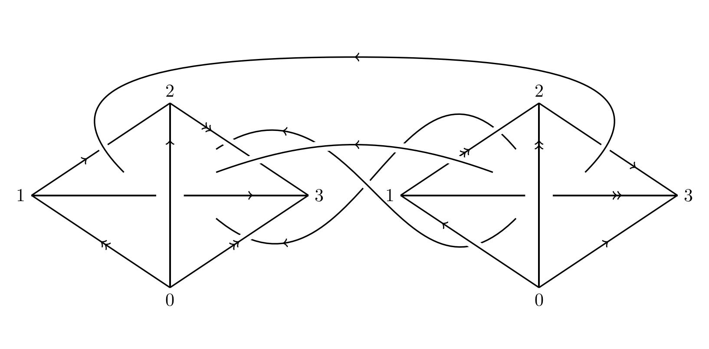
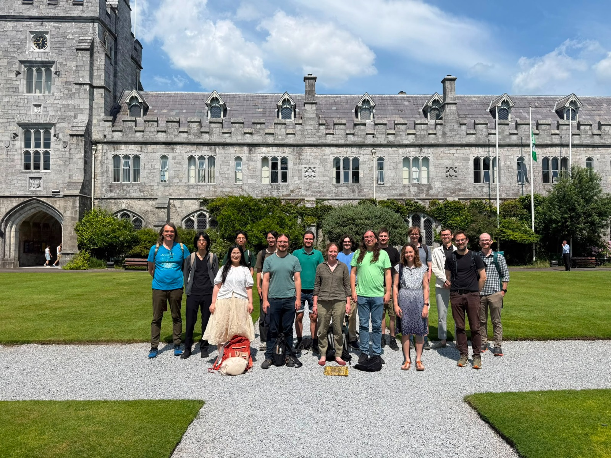

Workshop on Higher Teichmüller theory, knot theory and cluster algebras WGB G.14, UCC, July 13-17, 2026
- Speakers:
- Jennifer Brown (Edinburgh)
- Zack Greenberg (Leipzig)
- Jingmin Guo (Leipzig)
- James Hughes (Duke)
- Tsukasa Ishibashi (Tohoku)
- Yuma Mizuno (UCC)
- Dmitry Noshchenko (DIAS)
- Pierre-Guy Plamondon (Versailles)
- Ralf Schiffler (Connecticut)
- Wataru Yuasa (Hiroshima)
- Schedule, titles and abstracts
- Participants:
- Kevin Allen (UCC)
- Brendan Aliquant (UCC)
- Gabor Felsch (Leipzig)
- Björn Johannesson (UCC)
- Shunsuke Kano (Tohoku and Paris)
- Peter Spacek (Leipzig)
- Matthias Storzer (UCC)
- Organizers: Dani Kaufman (Leipzig), Robert Osburn (UCC)
- Funding: IRCLA/2023/1934